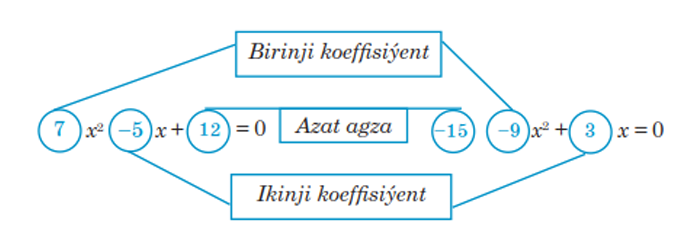
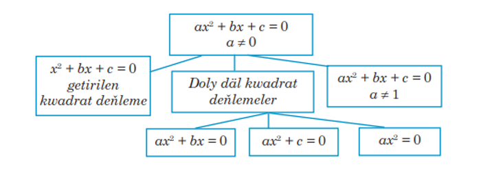

Kwadrat deňlemeler
ax
2
+ bx + c = 0

Bu ýerde a, b, c - hakyky sanlar. Eger a=1 bolsa onda bu görnüşdäki kwadrat deňlemä
getirilen kwadrat deňleme
diýilýär.
Doly däl kwadrat deňleme:
Eger kwadrat deňlemede ikinji koeffisient b ýa-da üçünji koeffisient c nola deň bolsa kwadrat deňlemä
doly däl kwadrat
deňleme diýilýär:
1) b = 0 ax
2
+ c = 0;
2) c = 0 ax
2
+ bx = 0;
3) b = 0 ; c = 0 ax
2
= 0;

D = b
2
- 4ac
-kwadrat deňlemäniň
diskriminanty
diýilýär.
x
1
= , x
2
=
-kwadrat deňlemäniň
kökleri
diýilýär.
!!!
Diskriminantyň alamatyna baglylykda kwadrat deňlemäniň iki köki (D > 0 bolanda), bir köki (D = 0 bolanda) bolup biler, (D < 0 bolanda) kökleri bolup bilmez.
Wiýetiň teoremasy:
Teorema:
Eger
x
2
+ px + q = 0
kwadrat deňlemäniň x
1
, x
2
kökleri bar bolsa onda
x
1
+ x
2
= -p, x
1
* x
2
= q,
deňlik dogrudyr.